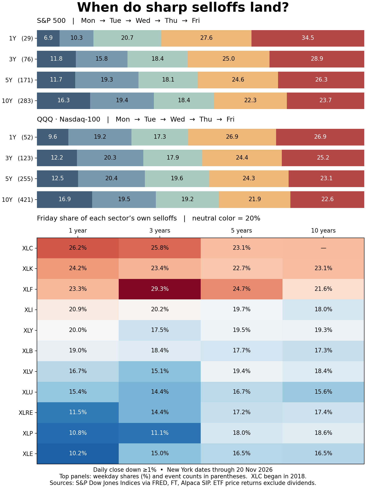
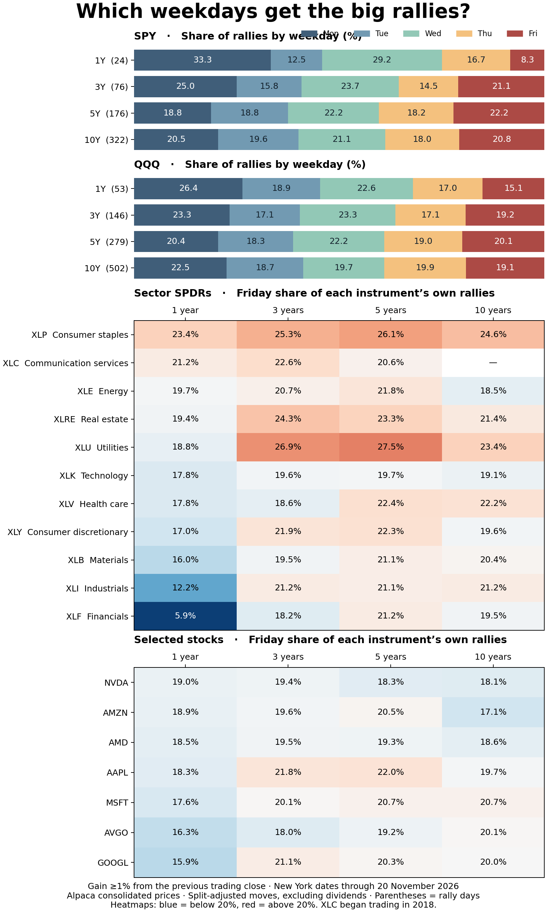

Black Friday
Selloff.
Why market always seems to crash on Friday?
On Sunday in Hong Kong, Friday’s close was still on my screen. The S&P had lost 3.70%. I asked Teddy about Fridays. He counted how often a Friday finished red. I had to stop him. Imagine writing the date of every sharp selloff on a slip of paper and putting the slips in a bowl. How many of the slips say Friday?
Ten slips in the bowl.
We set the cutoff at a 1% drop from the previous New York close. There were 29 slips in the bowl. On the calendar Friday had only 49 of the year’s 250 sessions. In the bowl it had ten.
Both versions of the story were true. Most Fridays finished flat or up. Yet if I remembered a particularly bad day, I had better than a one-in-three chance of remembering a Friday. Remove the November rout that prompted the question and there are still nine Fridays among the other 28 slips.
The complete one-year weekday count
| Weekday | Sessions | Down days | Down ≥1% | Down ≥2% | Mean return |
|---|---|---|---|---|---|
| Mon | 48 | 21 | 2 | 0 | +0.22% |
| Tue | 52 | 28 | 3 | 1 | +0.02% |
| Wed | 52 | 27 | 6 | 0 | +0.09% |
| Thu | 49 | 24 | 8 | 2 | −0.11% |
| Fri | 49 | 22 | 10 | 2 | −0.12% |

Pull back a decade and Friday still leads, with 67 of 283 selloffs. Its share falls to 23.7%. These windows sit inside each other. The same November afternoon appears four times.
Where did the good Fridays go?
Now write a slip for every gain of at least 1%. The S&P cash index delivered 27 such days. Friday got two. Monday got nine. Here was a better account of my memory: the week kept ending with conspicuous losses and remarkably few conspicuous wins.
| S&P cash index rallies | Mon | Tue | Wed | Thu | Fri | Total |
|---|---|---|---|---|---|---|
| 1 year | 9 | 3 | 7 | 6 | 2 | 27 |
| 3 years | 20 | 13 | 19 | 15 | 18 | 85 |
| 5 years | 34 | 34 | 41 | 35 | 42 | 186 |
| 10 years | 67 | 64 | 70 | 62 | 72 | 335 |
I could already hear the trade suggesting itself. Buy the Friday panic and collect the Monday bounce. So we looked at the actual weekends. Of those nine big Mondays, only March 23 immediately followed a Friday selloff of at least 1%. Five followed Fridays that had closed green. The two bowls mostly contained different weekends.

Nvidia had 16 big Fridays among its 84 big up days. AMD had 20 among 108. Someone watching chips could have enjoyed plenty of Friday rallies while someone watching SPY waited most of the year for a third.
Give tech the same bad market twice.
Technology fell at least 1% on all ten sharp Fridays. Consumer staples did so on none. Before blaming the weekend, we gave each Friday a distinct Monday–Thursday companion, choosing the ten pairs with the smallest combined difference in S&P loss. In both groups the market averaged −1.71%.
| ETF | Joined Fri /10 | Joined match /10 | Fri mean % | Match mean % |
|---|---|---|---|---|
| QQQ Nasdaq-100 | 10 | 9 | −2.67 | −2.18 |
| XLK Technology | 10 | 9 | −3.39 | −2.71 |
| XLC Communication | 6 | 6 | −1.32 | −1.10 |
| XLY Discretionary | 7 | 7 | −1.60 | −1.92 |
| XLI Industrials | 7 | 6 | −1.27 | −1.93 |
| XLB Materials | 5 | 7 | −1.02 | −1.41 |
| XLF Financials | 3 | 7 | −0.66 | −1.60 |
| XLRE Real estate | 3 | 4 | −0.63 | −0.81 |
| XLV Health care | 2 | 4 | −0.39 | −0.50 |
| XLU Utilities | 2 | 2 | −0.51 | −0.48 |
| XLE Energy | 1 | 2 | +0.63 | +0.11 |
| XLP Staples | 0 | 2 | +0.49 | +0.08 |
Tech crossed our threshold nine times on the other weekdays too. The distinction was depth: XLK lost an extra 0.68 percentage points on the average Friday. Drop the two most severe Fridays and their matches, and the difference is still 0.43 points. Financials tell a different story. They joined seven matched weekday declines and only three Friday declines.
A chip can stay busy while its owner gets poorer.
On June 5, chip stocks were still absorbing Broadcom’s report from earlier in the week. On November 18, a Wednesday, CoreWeave fell as investors weighed Nvidia’s language about financing its customers. Two days later, news of an SEC accounting probe hit Nvidia. A probe is an inquiry. The market had already begun repricing the financing relationship before Friday arrived.
This is where the calendar meets our TideTrend work. A lab reserves compute. A provider borrows against a contract and buys GPUs. The supplier may also own shares in the buyer. CoreWeave’s quarterly revenue reached $3.66 billion. Alongside $207 million in operating income sat $846 million in net interest expense. An investor can believe every GPU will find work and still ask who carries the bill until the customer pays.
Read the detailed TideTrend analysis: CoreWeave: Who Finances the Customer Behind the Contract?
Who needs the next dollar of outside financing before their customer pays them?
I started with a suspicion about Fridays. I’d keep the observation and leave the trade alone. The tape tells us when the losses landed. The contracts give us somewhere to look for who bears them.
Overlapping lookbacks end November 20, 2026. Thresholds use daily close-to-close price moves in New York, including overnight changes. ETF and stock figures use consolidated Alpaca prices with split adjustments and exclude dividends. Sector and stock heatmaps use each instrument’s own event count. XLC began trading in 2018. Ten matched pairs offer descriptive evidence. Matching controls index-loss size alone.
Index closes · FRED · Final close · FT · TideTrend · CoreWeave Q3 results · June chip selloff · Reuters · November selloff · Reuters